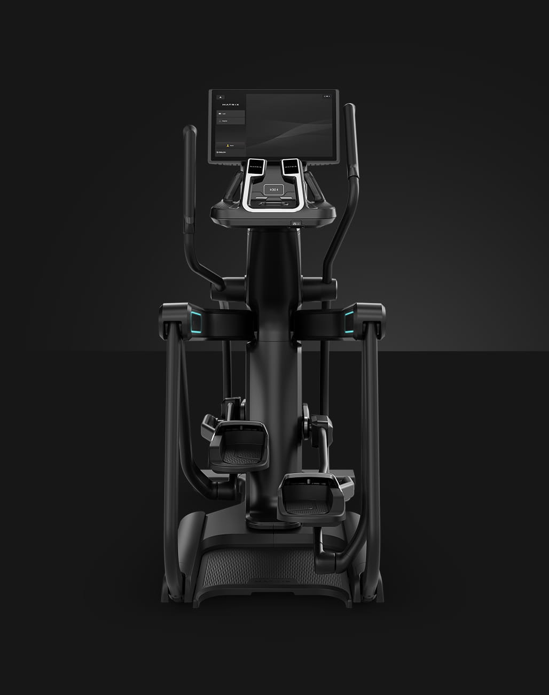
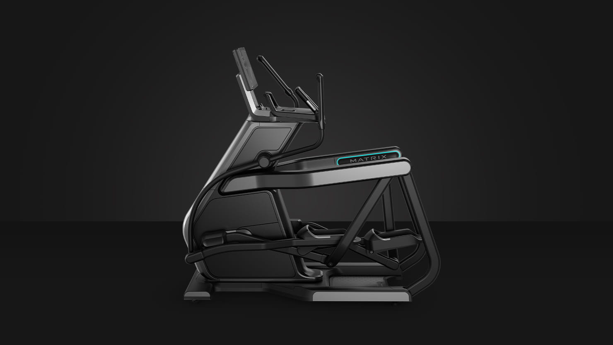
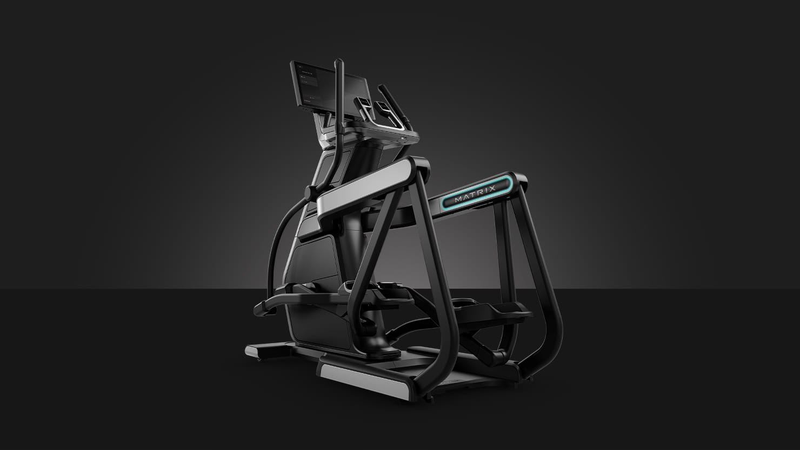
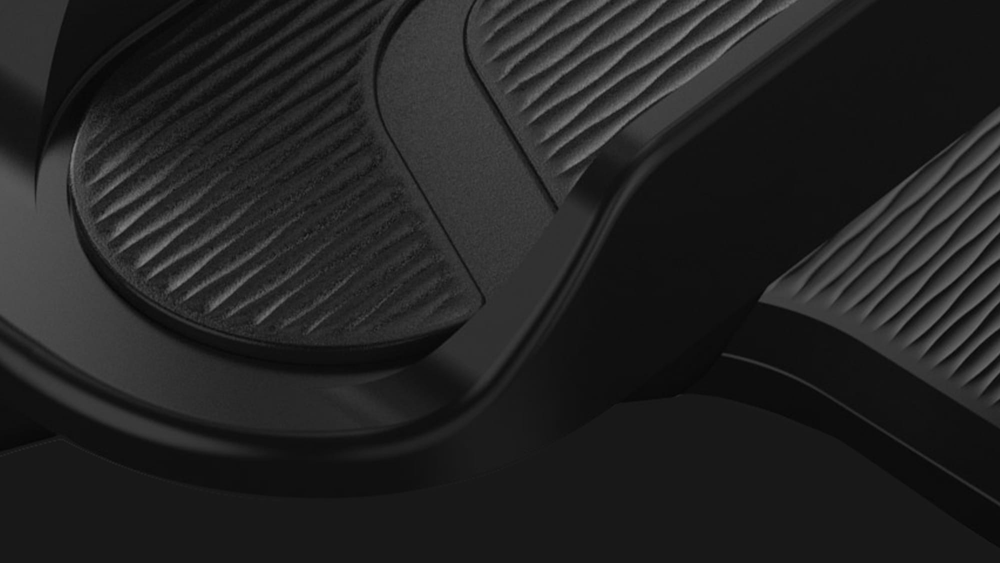
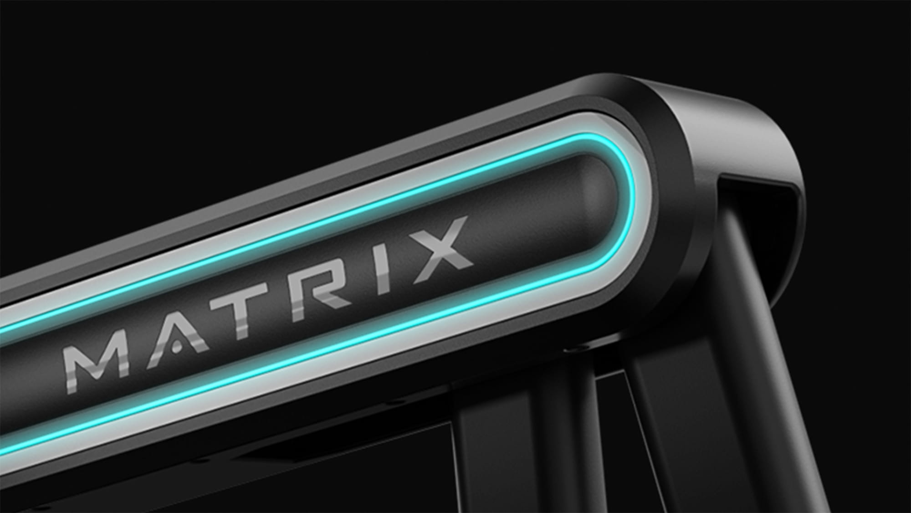

ОТТОЧЕННАЯ ЭЛЕГАНТНОСТЬ. НЕПРЕВЗОЙДЕННАЯ УТОНЧЕННОСТЬ.
Единственный в своем роде тренажер Onyx Ascent Trainer превращает тренировку в гармоничный поток естественного движения, пробуждающий все чувства.



ОТТОЧЕННАЯ ЭЛЕГАНТНОСТЬ. НЕПРЕВЗОЙДЕННАЯ УТОНЧЕННОСТЬ.
Единственный в своем роде тренажер Onyx Ascent Trainer превращает тренировку в гармоничный поток естественного движения, пробуждающий все чувства.
ОТТОЧЕННАЯ ЭЛЕГАНТНОСТЬ. НЕПРЕВЗОЙДЕННАЯ УТОНЧЕННОСТЬ.

Рифленые поверхности
Тщательно продуманные текстуры поверхностей эллипса Onyx Ascent Trainer создают непревзойденный стиль и обеспечивают поддержание тренажера в безупречном состоянии.

Подсветка
Мягкое акцентное освещение создает необыкновенное и запоминающееся впечатление.
АБСОЛЮТНАЯ ГАРМОНИЯ ДВИЖЕНИЯ.
Запатентованная конструкция подвески обеспечивает плавное и равномерное прохождение через каждый эллипс.